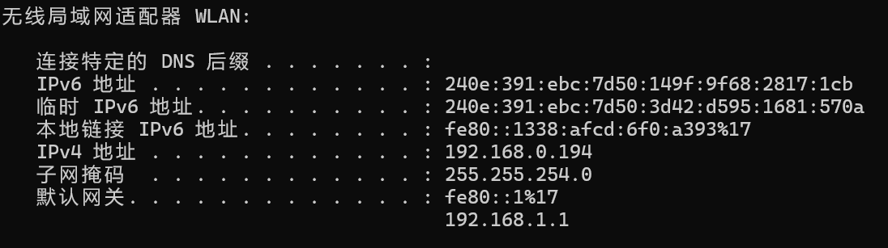

本文记录在将 Go 项目部署到 Kubernetes（K8S）集群时遇到的两类典型问题：如何编写 K8S 部署与访问配置文件，以及 Go 项目在容器中连接本地 MySQL/Redis 失败的排查与解决。
核心思路是：**通过 Deployment 定义应用负载、用 Service 暴露访问入口，并在容器内改用宿主机真实 IP 访问本机数据库，避免容器网络隔离导致的连接失败**。
K8S / Go 集成指南
1. 概述
将 Go 项目集成到 Kubernetes 时，通常面临两个层面的工作：
- 资源编排：编写 Deployment（定义应用副本与容器）与 Service（定义集群内外访问方式）。
- 网络连通：容器内的 Go 应用需要访问宿主机上的 MySQL、Redis 等本地服务，不能直接使用
localhost。
下文先给出标准的 K8S 配置文件，再针对“容器无法连接本地 MySQL”这一痛点给出完整排查步骤。
2. K8S 部署配置文件
部署一个 Go 应用一般需要两份清单：一份 Deployment 描述应用本身，一份 Service 负责暴露端口。
2.1 Deployment 配置
定义名为 go-app-deployment 的部署，运行单副本、监听容器端口 8081：
apiVersion: apps/v1
kind: Deployment
metadata:
name: go-app-deployment
spec:
replicas: 1
selector:
matchLabels:
app: go-app
template:
metadata:
labels:
app: go-app
spec:
containers:
- name: go-app
image: go-app:v1
ports:
- containerPort: 80812.2 Service 配置
使用 NodePort 类型将服务暴露到集群节点端口 30081，外部可通过 节点IP:30081 访问：
---
apiVersion: v1
kind: Service
metadata:
name: go-app-service
spec:
type: NodePort
selector:
app: go-app
ports:
- port: 8081
targetPort: 8081
nodePort: 30081| 配置项 | 说明 |
|---|---|
kind: Deployment |
声明无状态应用部署，管理 Pod 副本 |
kind: Service |
为一组 Pod 提供稳定的访问入口 |
type: NodePort |
在每个节点上开放固定端口供外部访问 |
nodePort: 30081 |
节点层面暴露的静态端口 |
containerPort: 8081 |
容器内部监听的应用端口 |
3. Go 项目连接本地 MySQL 问题
当 Go 项目运行在 K8S 容器中、但依赖本机（宿主机）的 MySQL 与 Redis 时，直接使用 localhost 或 127.0.0.1 无法连通，因为容器拥有独立的网络栈。解决思路是改用宿主机的真实局域网 IP。
3.1 获取本机 IP
先在宿主机上获取本机对局域网暴露的 IP 地址（下文以 192.168.0.194 为例）：

3.2 修改项目配置文件
将配置中的数据库、Redis 地址改为宿主机的真实 IP，而非 127.0.0.1：
server:
port: 0.0.0.0:8081
mysql:
host: 192.168.0.194
port: 3306
database: study_room_management
password: password
username: root
redis:
addr: 192.168.0.194:6379
password:
db: 0
192.168.0.194需替换为你本地本机的真实 IP。
3.3 创建远程访问的 MySQL root 账号
本地 MySQL 默认只允许本机连接，需创建允许任意 IP 的 root@'%' 账号：
- 登录本地 MySQL：
mysql -u root -p- 执行以下 SQL，创建允许所有 IP 连接的 root 账号并授权：
-- 创建用户 root@%
CREATE USER 'root'@'%' IDENTIFIED BY '你的密码';
-- 赋予所有权限
GRANT ALL PRIVILEGES ON *.* TO 'root'@'%' WITH GRANT OPTION;
-- 刷新权限生效
FLUSH PRIVILEGES;3.4 验证账号创建
查询用户表，确认出现 root | % 一行即表示配置成功：
SELECT user,host FROM mysql.user;看到有一行
root | %就成功了。
4. 总结
本文的两类问题均围绕“容器与本地资源如何互通”展开：用 Deployment + NodePort Service 完成 Go 应用的 K8S 编排，并通过将数据库地址改为宿主机真实 IP、开放 MySQL 远程账号，解决容器内访问本地 MySQL/Redis 的连接失败问题。
一句话总结：Go 项目上 K8S 时，用 Deployment 与 NodePort Service 完成编排，并把容器内数据库地址改为宿主机真实 IP 并开放远程账号，即可解决本地 MySQL/Redis 连接失败问题。